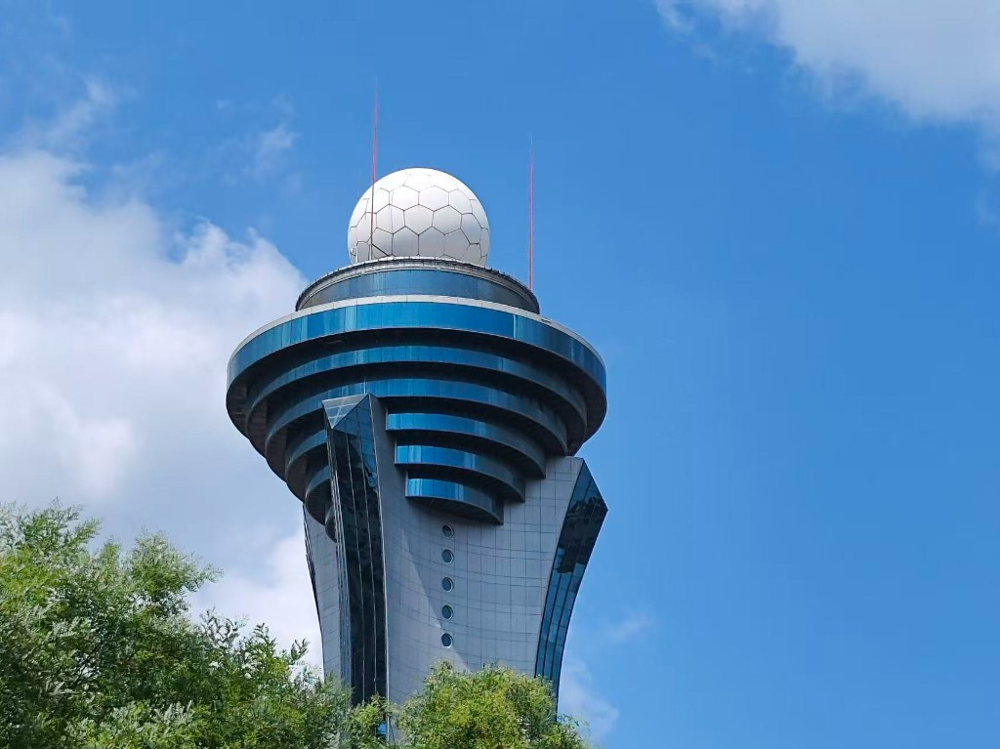
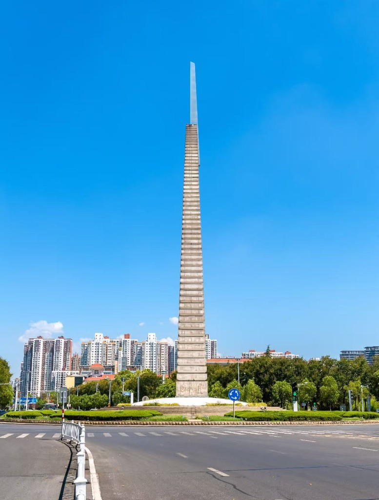
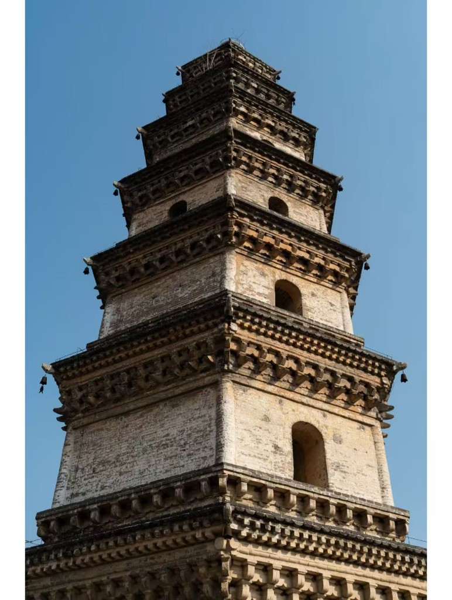
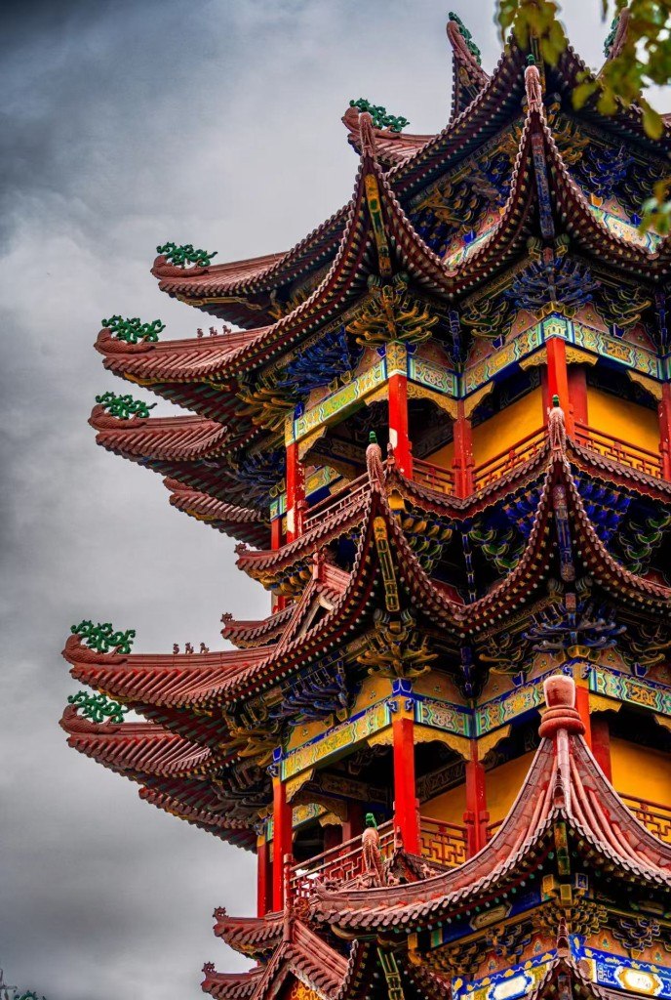
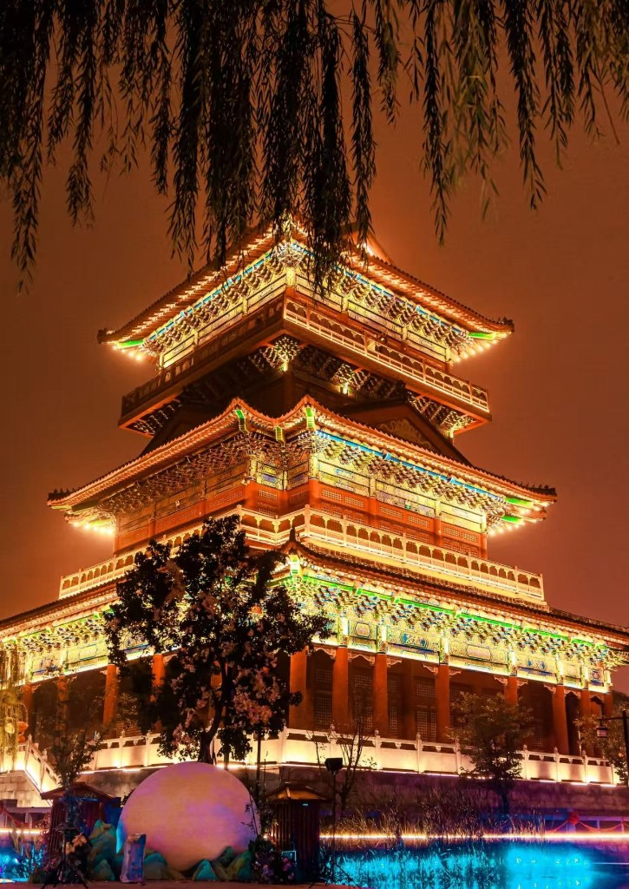
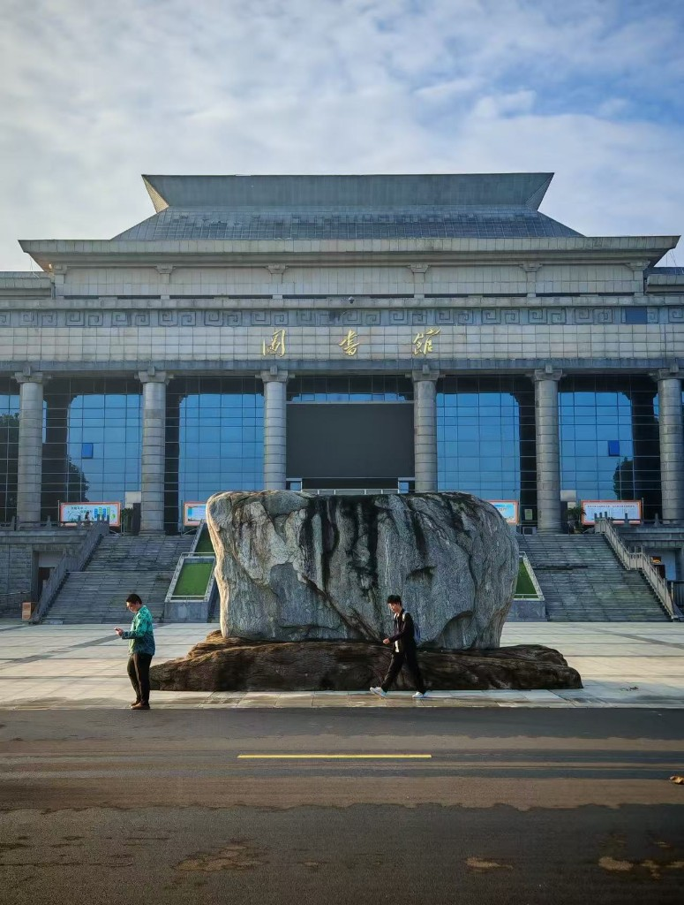

气象台
驻马店城市标志性建筑，球形观测塔与蓝天相映，展现天中现代都市风貌。
国家AAAAA级旅游景区 · 西游仙山 · 中原盆景
驻马店，古称汝宁、蔡州，因历史上驿站在此驻站备马，层层驿站而得名，素有“豫州之腹地，天下之最中”的美誉。这里山水相依、人文荟萃，嵖岈山奇景与天中文化交相辉映，是领略中原风光的绝佳目的地。






驻马店城市标志性建筑，球形观测塔与蓝天相映，展现天中现代都市风貌。
"天下之中"的象征，高耸入云，矗立城市中心，寓意驻马店"豫州腹地"的历史地位。
千年古塔，砖石结构层叠而上，是研究古代建筑与佛教文化的重要遗存。
豫南著名佛教圣地，殿宇恢宏、彩绘精美，香火鼎盛，人文底蕴深厚。
仿古文旅古镇，汇聚全市特色小吃与非遗手作，夜晚灯火璀璨，景致迷人。
坐落天中之地的省属本科院校，校园开阔，是城市教育与青春活力的代表。